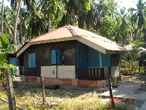
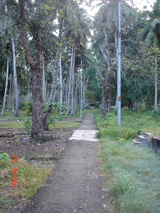
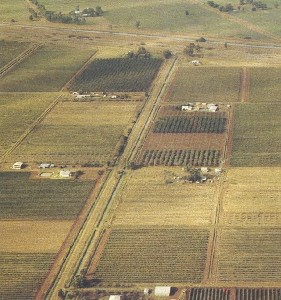

habitat
 ɑkɑcɛʈʰi आकाचैठी MORPH: ɑkɑ-cɛ-ʈʰi. N सं. courtyard of a house; घर का आंगन. SD: habitat, रहन-सहन.
ɑkɑcɛʈʰi आकाचैठी MORPH: ɑkɑ-cɛ-ʈʰi. N सं. courtyard of a house; घर का आंगन. SD: habitat, रहन-सहन.
ɑmɑeotɲo आमाएओतञो MORPH: ɑ-mɑe-ot-ɲo. VAR: ɑ-mɑe-ɔt-ɲyɔ आमाएऔतञ्यौ. N सं. house, of our forefathers/ elder people; हमारे पूर्वजों/बुजुर्गों का घर. SD: habitat, रहन-सहन.
ɑrɑbɑlo1 आराबालो N सं. backyard; पिछवाड़ा. SD: habitat, रहन-सहन. SEE: ɑrɑbɑlo2 ‘behind/ towards the back’ ‘पीछे की तरफ़ आराबालोhm:{2}’.
ɑtoŋ आतोङ MORPH: ɑ-toŋ. N सं. courtyard; आंगन. ʈʰ-ɑ-toŋ ठातोङ. my courtyard. मेरा आंगन. SD: habitat, रहन-सहन.
bɑrij बारीज N सं. encampment, personal; निजी डेरा. SD: habitat, रहन-सहन.
boinʈɑlɲɑ बोईनटालञा N सं. Jarawa areas near Bluff Island; ब्लफ़ द्वीप के पास का जारवा क्षेत्र. SD: habitat, रहन-सहन.
bolpʰoŋ बोलफोङ MORPH: bol-pʰoŋ. N सं. place where rope-grass is grown; वह जगह जहां रस्सी बनाने में प्रयुक्त घास पाई जाती है. SD: habitat, रहन-सहन. NT: Also a place name. मायाबंदर के पास एक स्थान।.
cɔkbiʈɔesue2 चौक्बीटौएसूए MORPH: cɔkbi-ʈɔe-sue. N सं. name of a place where turtles are roasted; एक जगह का नाम जहां कछुए भूने जाते हैं. SD: habitat, रहन-सहन. NT: Turtles were burnt at this place. Hence, the place is named ‘turtle-bones-burning’. इस जगह कछुओं को जलाया जाता था अतः इस स्थान का नाम ‘कछुआ-हड्डी-पकाना’ है।. SEE: cɔkbiʈɔesue1 ‘burning of turtle’ ‘जलाना, कछुए को चौक्बीटौएसूएhm:{1}’.
 |
ɖoutɑrɑcɑ डोऊताराचा MORPH: ɖou-tɑrɑ-cɑ. N सं. nest, of red ants; लाल चींटियों का घोंसला. SD: habitat, रहन-सहन.
ɖuɡuleber डूगूलेबेर MORPH: ɖuɡu-leber. N सं. front of the seashore which is closest to the jungle; जंगल के पास वाले समुद्रतट का अगला भाग. SD: habitat, रहन-सहन. NT: This word is used as deictic marker to specify exact location. यह शब्द स्थानवाचक संज्ञा के रूप में भी प्रयोग होता है।.
elinnɑːwbe एलीन्नाऽवबे N सं. sleeping place; सोने की जगह. SD: habitat, रहन-सहन.
eʈʰ एठ N सं. support; the pole which supports the roof of a house; सहारा; बांस जो घर की छत को सहारा दे. SD: habitat, रहन-सहन.
ɛrkɑrɑ ऐरकारा MORPH: ɛr-kɑrɑ. VAR: er-kɑːrɑ एरकाऽरा. N सं. birthplace; जन्मस्थान. ɲɛr-kɑrɑ utconnebom ञैरकारा ऊत्चोन्नेबोम. You go where you were born. जहां तुम्हारा जन्म हुआ है, तुम वहां जाओ।. SD: habitat, रहन-सहन.
forɔːc फोरौऽच N सं. house; घर. SD: habitat, रहन-सहन.
ɡopʈɑpelɑŋ गोप्टापेलाङ MORPH: ɡop-ʈɑ-pelɑŋ. Etym: Pujjukar; पुज्जूकर. N सं. place where animals are killed and cut; वह जगह जहां जानवरों को मारा व काटा जाता है. SD: habitat, रहन-सहन.
ibec ईबेच N सं. honeycomb; मधुकोष; छत्ता. SD: edible item, खाद्य सामग्री, habitat, रहन-सहन.Environmental
iːβe ईऽबे N सं. mother island; अपना द्वीप. SD: habitat, रहन-सहन.
jinebolo जीनेबोलो Etym: Bo; बो. VAR: jinebɔːlo जीनेबौऽलो. N सं. white anthill; सफ़ेद चींटियों की बांबी. SD: habitat, रहन-सहन.
kotɲo कोत्ञो MORPH: kot-ɲo. N सं. house made of mud or clay; मिट्टी का घर. SD: habitat, रहन-सहन.
lɑobirɑ लाओबीरा MORPH: lɑo-birɑ. N सं. unknown or foreign place; अनजान या विदेशी जगह. SD: habitat, रहन-सहन.
lɑotɑrɑɲo लाओताराञो MORPH: lɑo-tɑrɑ-ɲo. N सं. outsiders’ house or play; city; अजनबियों का घर या खेल; नगर. SD: habitat, रहन-सहन.
myotɑrɑɲyo म्योताराञ्यो MORPH: myo-tɑrɑ-ɲyo. N सं. house, made of stone; पत्थर से बना हुआ पक्का घर. SD: habitat, रहन-सहन.
ŋo ङो N सं. temporary shelter; अस्थायी आसरा. SD: habitat, रहन-सहन.
ŋɔːtʰo ङौऽथो N सं. resting place; आरामगाह. SD: habitat, रहन-सहन.
 |
 ɲo2 ञो VAR: ɲyo ञ्यो; ɲeo ञेओ; ɲyoː ञ्योऽ; ot-ɲyo ओत्ञ्यो. N सं. house; घर.
ɲo2 ञो VAR: ɲyo ञ्यो; ɲeo ञेओ; ɲyoː ञ्योऽ; ot-ɲyo ओत्ञ्यो. N सं. house; घर.  cyɑl ŋot ɲyo be च्याल ङोत ञ्यो बे. Where is your house? तुम्हारा घर कहां है? ɲyo-kʰuro ञ्योखूरो. big house. बड़ा घर. ŋu ɲyo-ɑk ŋut conne-bom ङू ञ्योआक ङूत चोन्नेबोम. Are you going to your home? क्या तुम अपने घर जा रहे हो? SD: habitat, रहन-सहन. SEE: ɲo1 ‘camp’ ‘डेरा ञोhm:{1}’.
cyɑl ŋot ɲyo be च्याल ङोत ञ्यो बे. Where is your house? तुम्हारा घर कहां है? ɲyo-kʰuro ञ्योखूरो. big house. बड़ा घर. ŋu ɲyo-ɑk ŋut conne-bom ङू ञ्योआक ङूत चोन्नेबोम. Are you going to your home? क्या तुम अपने घर जा रहे हो? SD: habitat, रहन-सहन. SEE: ɲo1 ‘camp’ ‘डेरा ञोhm:{1}’.
ɲotɑrɑtom ञोतारातोम MORPH: ɲo-tɑrɑ-tom. VAR: ɲo-tɑrɑ-tɔm ञोतारातौम; ɲyoːtɑrɑːtomo ञ्योऽताराऽतोमो. N सं. big, old community house; permanent dwelling place; village; विशाल, पुराना सामुदायिक भवन; स्थायी रहने की जगह; गांव. SD: habitat, रहन-सहन.
 |
 ɲɔrtɔ ञौरतौ N सं. way; path; road; राह; रास्ता; सड़क. ɲɔrtɔ-lobuŋ ञौरतौ-लोबूङ. long road; straight road. लम्बा रास्ता ; सीधा रास्ता. SD: habitat, रहन-सहन.
ɲɔrtɔ ञौरतौ N सं. way; path; road; राह; रास्ता; सड़क. ɲɔrtɔ-lobuŋ ञौरतौ-लोबूङ. long road; straight road. लम्बा रास्ता ; सीधा रास्ता. SD: habitat, रहन-सहन.
ɲɔsɔtbe ञौसौत्बे MORPH: ɲɔ-sɔtbe. N सं. settlement; बस्ती. SD: habitat, रहन-सहन.
ɲɔtɑcɔkʰo ञौताचौखो MORPH: ɲɔr-tɑ-cɔkʰo. N सं. path by the side of the house; घर की बगल वाली पगडंडी या सड़क. SD: habitat, रहन-सहन.
ɲyoekʰuro ञ्योएखूरो MORPH: ɲyo-e-kʰuro. N सं. house, very big; बहुत बड़ा घर. SD: habitat, रहन-सहन.
ɔtɲyɔ औत्ञ्यौ MORPH: ɔt-ɲyɔ. VAR: ut-ɲyo ऊतञ्यो; ot-ɲyɔbe ओत्ञ्यौबे. N सं. house; घर. kʰudi-ɔt-ɲyɔ खूदी-औत-ञ्यौ. his house. उसका घर.  ʈʰ-ot-ɲyɔbe ठोतञ्यौबे. my house. मेरा घर. ɖe-ʈʰo-ɲiyo-be डेठोञीयोबे. This is my house. यह मेरा घर है।. du-ot-ɲiyo-be दूओत्ञीयोबे. That is my house. वह मेरा घर है।. SD: habitat, रहन-सहन.
ʈʰ-ot-ɲyɔbe ठोतञ्यौबे. my house. मेरा घर. ɖe-ʈʰo-ɲiyo-be डेठोञीयोबे. This is my house. यह मेरा घर है।. du-ot-ɲiyo-be दूओत्ञीयोबे. That is my house. वह मेरा घर है।. SD: habitat, रहन-सहन.
pʰoruc फोरूच N सं. permanent big home; स्थायी बड़ा घर. SD: habitat, रहन-सहन.
ɽo ड़ो Etym: Khora. N सं. pen for cattle; मवेशीखाना. SD: habitat, रहन-सहन.
širototpʰolokɑɲo शीरोतोत्फोलोकाञो MORPH: širo-tot-pʰol-okɑ-ɲo. N सं. coastal people’s home; समुद्र के किनारे के लोगों के घर. SD: habitat, रहन-सहन.
sorobul2 सोरोबूल N सं. Jarawa areas near Bluff Island; ब्लफ़ द्वीप के पास का जारवा क्षेत्र. SD: habitat, रहन-सहन. SEE: sorobul1 ‘enemy’ ‘दुश्मन सोरोबूलhm:{1}’.
 tɛi तैई N सं. place; जगह.
tɛi तैई N सं. place; जगह.  meŋe-tɛi मेङेतैई. our place. हमारी जगह. SD: habitat, रहन-सहन.
meŋe-tɛi मेङेतैई. our place. हमारी जगह. SD: habitat, रहन-सहन.
tirkʰuru तीरखूरू N सं. dwelling (huge); house; निवास (बड़ा); घर. SD: habitat, रहन-सहन.
ʈɑrɑʈʰimiku टाराठीमीकू MORPH: ʈɑrɑʈʰi-mi-ku. N सं. village; गांव. SD: habitat, रहन-सहन.
 |
 ʈʰi2 ठी N सं. place; earth; land; जगह; धरती; ज़मीन. SD: habitat, रहन-सहन, natural environment, प्राकृतिक वातावरण. SEE: ʈʰi1 ‘first singular object (me)’ ‘मुझे ठीhm:{1}’.Environmental
ʈʰi2 ठी N सं. place; earth; land; जगह; धरती; ज़मीन. SD: habitat, रहन-सहन, natural environment, प्राकृतिक वातावरण. SEE: ʈʰi1 ‘first singular object (me)’ ‘मुझे ठीhm:{1}’.Environmental
ʈʰicop ठीचोप MORPH: ʈʰi-cop. N सं. our dwelling place; हमारा घर. SD: habitat, रहन-सहन. NT: Used with reference to the island where the Great Andamanese reside, e.g. Strait Island. स्ट्रेट द्वीप जहां अण्डमानी लोग रहते हैं।.
ʈʰiterino ठीतेरीनो MORPH: ʈʰi-ter-ino. N सं. wet place; गीली जगह. SD: habitat, रहन-सहन.
ʈʰitotbel ठीतोतबेल MORPH: ʈʰi-tot-bel. VAR: ʈiːtotbeːl टीऽतोतबेऽल. N सं. clean place; साफ़ जगह. SD: habitat, रहन-सहन. SEE: ʈʰitɛrbɛi2 ‘broom’ ‘झाड़ू लगाना ठीतैरबैईhm:{2}’.